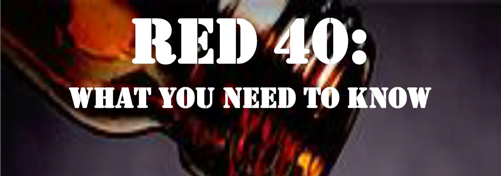

Portfolio
Design
This is a flyer I made for one of my science classes outlining the harm of Red 40 as a chemical in common foods. The purpose was to spread awareness of the harm that Red 40 can do, especially to those who are allergic to it. (Used Word)
This is a logo I made specifically for some of my work. It has yet to make the cut; however, I am still proud of the work I did to make this. (Used Illustrator)
Written Work
This is kind of a mix of design and writing, but I included it because of the complexity of the use of Microsoft Word. While there were a number of ways I could have designed this flyer, I chose to make a table that didn't have any cells, but instead used the borders as a decorative piece. (Used Word)